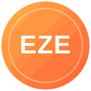

Ezequiel
EZE · Red Base
- Toca el botón naranja.
- MetaMask te pedirá cambiar a la red Base: acepta.
- Luego te preguntará si quieres agregar EZE: toca Agregar.
¿No funciona el botón? Agrégalo a mano (1 minuto)
- Toca Copiar dirección del token (arriba).
- En MetaMask, en la lista de Tokens, baja y toca Importar tokens.
- Elige la pestaña Token personalizado y la red Base.
- Pega la dirección. Se completa solo: EZE, 18 decimales.
- Toca Siguiente → Importar.